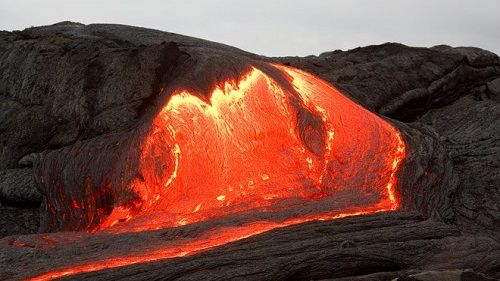

На нашем сайте подобраны наиболее интересные и опасные вулканы со всего мира.
Вулканы разделены по континентам и странам. Подобрать вулкан для рабочего стола можно в разделе
Фотографии. В разделе Новости самые последние
события из мира вулканов.
Кто живет на дне вулкана Йеллоустоун?
Американские ученые провели исследование самого загадочного в мире вулкана Йеллоустоун, возле которого
уфологи неоднократно наблюдали НЛО. Теперь эксперты выяснили шокирующую информацию о том, кто может жить
на дне вулкана. Ученые утверждают, что ещё древние жители Античности верили, что на дне вулкана
Йеллоустоун жили боги. На протяжении многих лет ученые изучали вулкан, чтобы теперь сказать, кто же
обитает на дне Йеллоустоуна.Специалисты обнаружили, что на дне вулкана живут уникальные бактерии, которые
могут свободносуществовать и даже размножаться при температуре превышающей точку кипения воды. По словам
ученых, еслиже эти бактерии поместить в холодную воду, они моментально погибают. Кроме того, ученые
зафиксировали у подножья вулкана более 400 видом организмов, причем не только одноклеточных, но и червей,
крабов и даже морских змей, которые отлично переносят высокие температуры.
На Камчатке 17 сентября проснулся вулкан Ключевая сопка
Сегодня один из самых известных вулканов России выбросил столп пепла высотой в 7 километров. Шлейф от
выброса распространился в радиусе 38 километров, однако рядом населенных пунктов не оказалось.
Специалисты присвоили вулкану «оранжевый класс опасности». Однако около Ключевой сопки не проложены
траектории полетов воздушных судов. Ближайшие населенные пункты - поселки Ключи и Козыревск
Усть-Камчатского района - расположены в 45 километрах от потенциально опасного места. Поток ветра
сместил пепел в сторону залива Озерный.
Вулкан Ключевская сопка — самый высокий действующий вулкан Евразии. Он расположен в Ключевской группе
вулканов, на расстоянии 60 километров от Берингова моря. Его высота составляет около 4850 метров.
Петропавловск-Камчатский расположен в 360 километрах от вулкана.
Вулкан Питон-де-ла-Фурнез выбрасывает лаву на высоту до 80 метров
Вулкан Питон-де-ла-Фурнез, начавший извергаться 11 сентября на острове Реюньон, продолжает свою
деятельность и выбрасывает фонтаны лавы на высоту до 80 метров. Еще вчера его активность была
сосредоточена в двух вулканических центрах на краю длинной эруптивной трещины, однако 16 сентября
одно из отверстий закрылось, в результате чего из второго стали вырваться лавовые фонтаны высотой
с 25-этажный дом.
Обильное излияние лавы из двух отверстий привело к образованию достаточно крупных вулканических
конусов. Лавовые потоки шириной от 6 до 7 метров и высотой до 3 метров направляются в
северо-восточную сторону. В пятницу сейсмометры зарегистрировали 3 вулканических землетрясения,
никакой существенной деформации поверхности замечено не было.
Питон-де-ла-Фурнез находится в малонаселенной части острова Реюньон, поэтому на данный момент не
представляет опасности для ближайших населенных пунктов. Статус его тревоги сохраняется на уровне
2-2 Alert, что означает «извержение продолжается».
Ученые предсказали извержение вулкана Сакурадзима в Японии
Международная группа ученых исследовала один из самых активных вулканов в стране. Японские и
британские специалисты в ходе наблюдений и экспериментов пришли к выводу, что вулкан Сакурадзима
накопил огромные запасы магмы. Это свидетельствует о будущем мощном извержении, которое состоится в
течение ближайших 30 лет.
Как передает BBC, вулкан представляет опасность для населения близлежащих населенных пунктов.
Он может полностью разрушить город Кагосима, в котором проживают около 600 тысяч человек. Также
вулкан угрожает АЭС «Сэндай», которая расположена в 49 километрах от него.
Ранее вулкан Этна проснулся на Сицилии. Он выбрасывал лаву на высоту 3,5 км.
Изобретена искусственная лава для имитации извержений вулканов

Напомним об опасности вулканических извержений на примере исландского исполина Эйяфьятлаекудль,
который продемонстрировал свою силу в 2010 году, сообщает Горная энциклопедия.
Это извержение стало причиной нарушения нормального авиасообщения в Европе. Поэтому для изучения
процессов, которые проходят внутри вулкана до извержения и после него, учеными-вулканологами
проводится масса самых разнообразных исследований.
Американскими учеными из Буффало недавно была создана искусственная лава в лабораторных условиях.
Последующее ее использование предназначено для имитации вулканических извержений и изучения механизма
взаимодействия расплавленного базальта и воды.
Разогрев базальт до температуры 1371°С, эксперты держали его в течении 3 часов. Затем он был разлит в
специальные резервуары. Таким образом, лава будет использоваться для имитации вулканического
извержения, целью которого является определение количества воды необходимого для «взрывных реакций».
Также в планах ученых изучение влияния лавы на здоровье человека, чтобы в случае необходимости, знать
какую первую помощь нужно будет оказывать людям, находящимся в эпицентре.